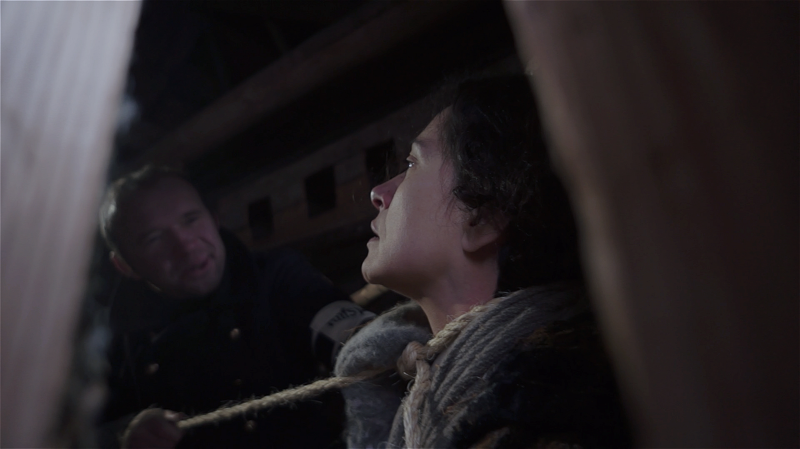
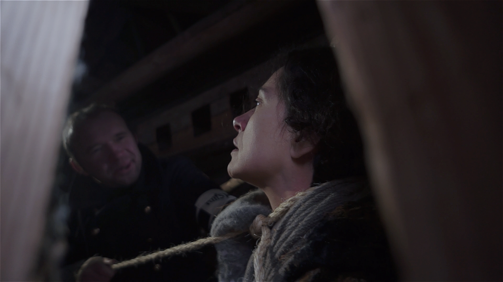

Полнометражный художественный фильм
«Сошествие с креста»
История одного дня в оккупированной фашистами русской деревне. Староста – старообрядец воспитывает «городского» сироту, мальчика шести лет, приобщая его к вере. Они готовятся к Рождеству, когда в их хлев, скрываясь от преследования, приходит беременная еврейка Мариам. Митька «видит» в ней Богородицу и решает, что она пришла родить к ним мессию и что войне будет конец и она-то вылечит умирающего политрука, которого скрывает дед в погребе. Но неожиданно в историю вплетается обозлённый на Советскую власть Сашка-полицай, которому Митька хвастается о Богородице.
Диплом Второго Московского кинофестиваля имени Саввы Морозова
Автор сценария, режиссер и оператор – Евгений БархановХудожник - А. Шаинов
Звукорежиссер - О. Зуев
Продюсер – Лариса Моисеева
В ролях: М. Бычков, И. Яковлева, С. Моряков, А. Вишняков, В. Невежин, Д. Тормо-Бирюков, М. Степанова
  
|
© АНО ТКО «МинАкультуры», 2016г., 77мин.